Dashboarding in Dark and Nim
Two languages for the price of one?

In this post, we'll explore the exciting new languages Dark and Nim. I am personal extremely pleased with these two languages. They are a joy to work with and both have fast development times.
Let's start with Dark. Dark has made the rounds on various programming forums and promises "deployless" programming.
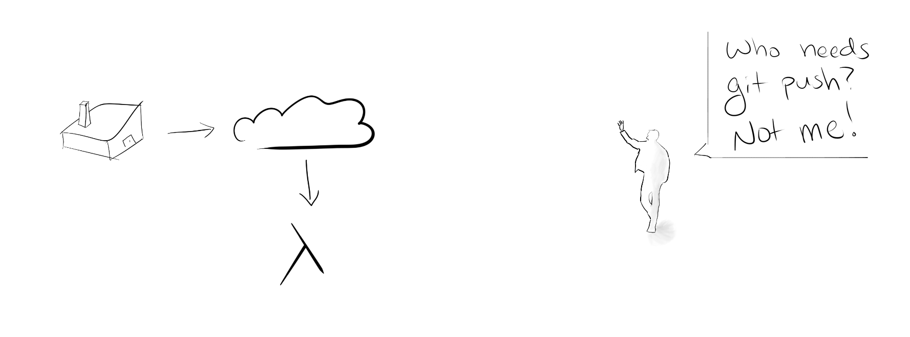We started out with our own servers in data centers. Then they came for the data centers. So we went to the cloud. Then they came for our cloud servers and we moved to serverless functions. Now, they've come for our very deployments.
I absolutely love it. Now, granted, there are likely certain use cases where Dark won't fit. But for building dashboards and monitoring systems, it's pretty awesome.
Nim, on the other hand, is a general purpose programming language. It is statically typed, compiled, expressive, with a very friendly syntax. One of the selling points of Nim, for me, is just how easy it is to create standalone executables that can run on many different hardware/OS.
Nim also recently hit 1.0.0, which means it is stable. This may take it out of esolang status, but it is nice if you are considering using it for any large project.
I wrote the client in Nim and the backend (server?) in Dark. This development experience was definitely a joy with a few hiccups along the way.
- boards
A dashboard is a set of visualizations that deliver timely insights.
Dashboards are a staple in modern analytics organizations. Most of the time, you'll use a domain specific technology like Tableau, Looker, or Grafana. However, there may be times when you want the flexibility of your own dashboard.
In this post, I'll show parts of a Fitness Tracker™ dashboard I built. It contains three parts. The first is a command line tool (CLI) that records your workout and sends it to the cloud. I wrote this first piece in Nim. The second piece is the backend in Dark with a full data base and querying ability.
The final piece is a simple HTML/JS/CSS dashboard that queries the Dark backend and plots the data. I won't go into the code for that piece, but I'll show pictures!
Command the lines!
write(stdout, "How many minutes was your workout? -> ") var minutes = parseInt(readLine(stdin)) write(stdout, "How did it feel? -> ") var feeling = parseInt(readLine(stdin)) write(stdout, "Write some notes -> ") var notes = readLine(stdin)
We first prompt the user for various inputs associated with the work out. Now, I'm living on the wild side, so I don't do any input validation. I'm not usually a thrill seeker, but today is different.
Then we store the information in a struct with a super helpful macro %* that allows us to create a JSON node object.
let body = %*{
"minutes": minutes,
"feeling": feeling,
"notes": notes
}
Then, as easy as that, we shoot the JSON up into the ether and hope. At lease we can see the response status.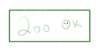
let client = newHttpClient()
client.headers = newHttpHeaders({ "Content-Type": "application/json" })
let response = client.request("< url-redacted >", httpMethod = HttpPost, body = $body)
echo response.status
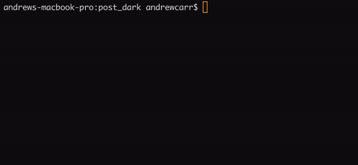
!Light
At the time of writing, Dark is in private Beta, but you can sign up and build cool things now. The team seems responsive and eager to help.
As part of the vision, Dark is all written in the browser.
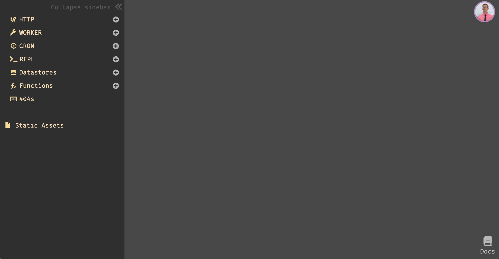It is extremely quick to prototype and follows a very functional style. Let's build a quick adding machine just to get a taste.
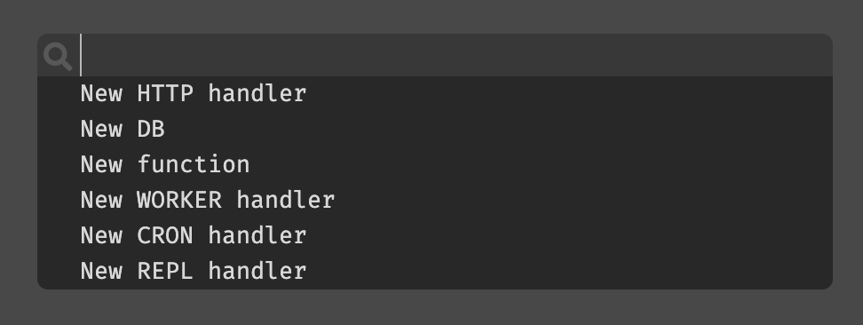
We create an HTTP endpoint using the finder-type-thing. You can make a number of other objects that can be composed to build the entire application.
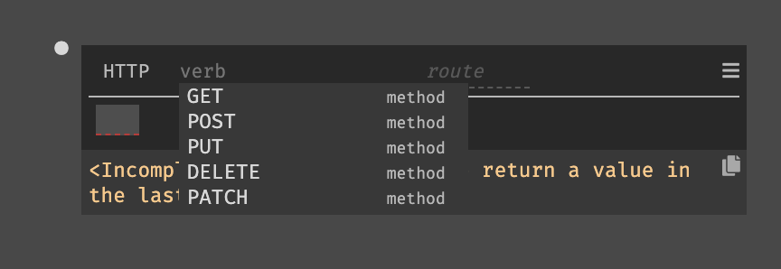
We make this a GET endpoint that accepts two query parameters one and two. We have to cast these values to integers for the addition operation. This is as easy as pressing Shift-Enter and allowing their auto-complete to do the rest of the work.
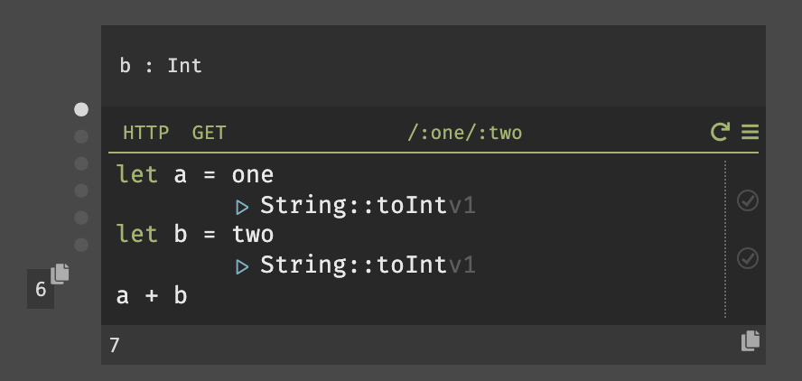
Then if we pass in the proper values to our URL as query parameters https://andrewnc-blog.builtwithdark.com/1/6 we get the desired output (please don't DDOS this URL, it may cost me a fortune).
This output is also displayed in the browser.
One thing I noticed while writing in Dark is that the auto-complete is nice, but Tab, Space, Enter all behaved differently than I had expected. Also, Dark is sometimes TOO helpful and moves my cursor when I don't expect.
It's no Vim, but it'll get there.
The Dark developers also are advocating for a style of development called "trace driven development" (TDD) where you start with the API endpoints you want and work backwards.
For the fitness tracker we want a way to post from the CLI.
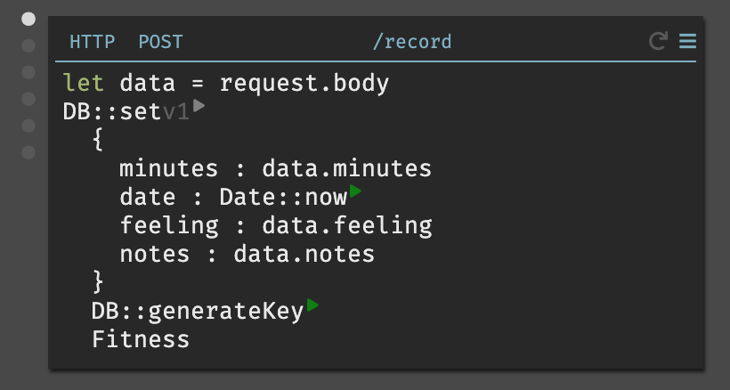The step by step of this code is
- Get the request body
- Extract the info from
dataand send it to the DB (along with Today's date) - Generate a key
- Tell Dark where you want to write the data
By following the TDD style we then need a Fitness data store.
Easy! Now we can write data by hitting the proper endpoint with the correct JSON.
Dark also gives amazing stack traces which means if you hover over the little grey dots on the left of the boxes, you'll see request information.
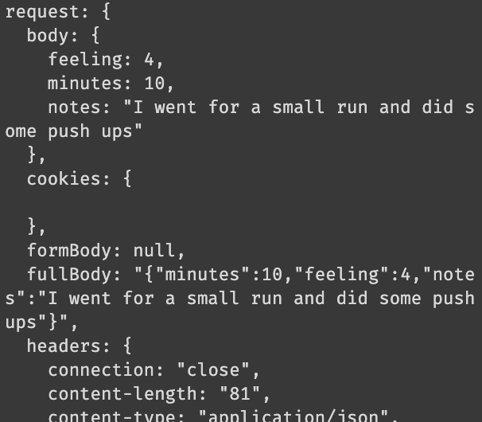Built in logging! That's nice.
There are also boxes called REPL. These aren't actual Read, Eval, Print, Loops. They are, instead, little functions that allow you to test your end points. Very handy.
Finally, we want a way to query the data store. So we set up a GET endpoint.
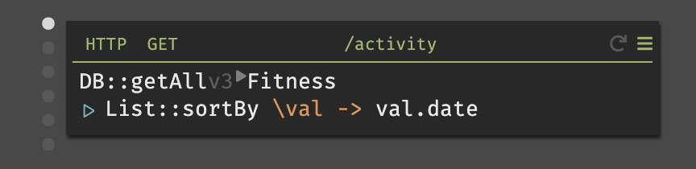And we can now see all the data returned as JSON (handily sorted by the date). And that's it! We have a fully functional database with multiple endpoints that is scalable, maintainable, and easy to use. With practice, you could write full, useful, CRUD applications with moderately complex business logic in Dark.
This platform gives more power to single developer teams, imagine the cool start ups you can build, without ever messing about with server configurations again!
You may have also noticed that Dark is functional, I like that.
X marks the spot
After our client and server are ready to go, we simply need to build a small front end. I did this using Chartist, Anime, Flexbox, and Jquery.
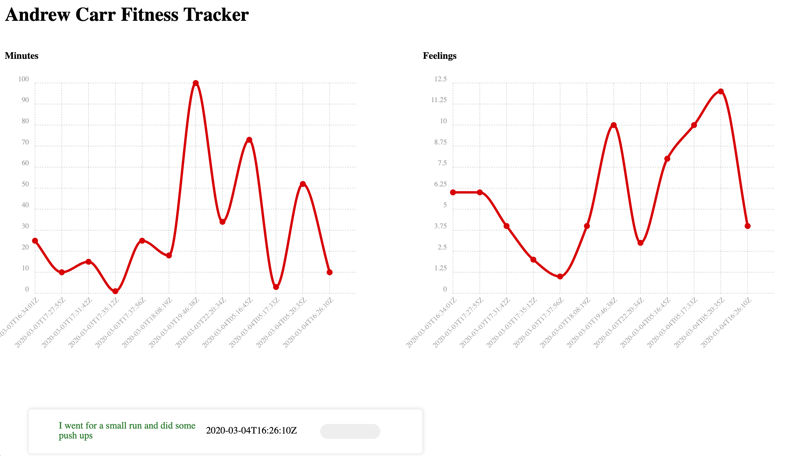We have two plots which can give insight into how many minutes I spend exercising and how I feel after each workout. Also, I have a small list of notes taken.
Feel free to reach out if you're curious how I did the JavaScript portion of this. In the end, it was a simple query to the GET endpoint and a small amount of parsing of the returned JSON.
That's it!
I can now log my workouts locally, then review my fitness history where ever I may be!
Conclusion
Nim was as simple as python, but has many type checking guarantees (and it's fast!). Even though the script was short, I will definitely be writing more Nim in the future.
Additionally, Dark holds a special place in my toolbox now. I have no doubt I'll use it to spin up more little projects like this.
If you are resource constrained, I would seriously consider reaching for these two languages to build some amazing things.
If you like this, tweet at me and Subscribe for updates on new posts.